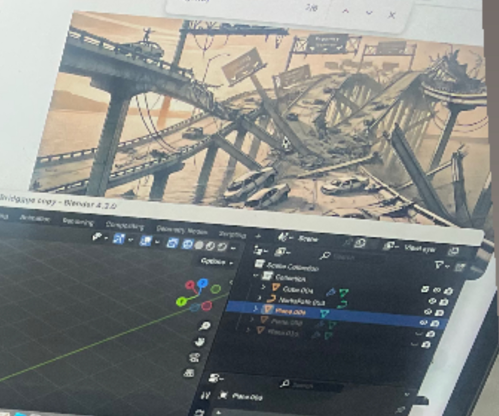
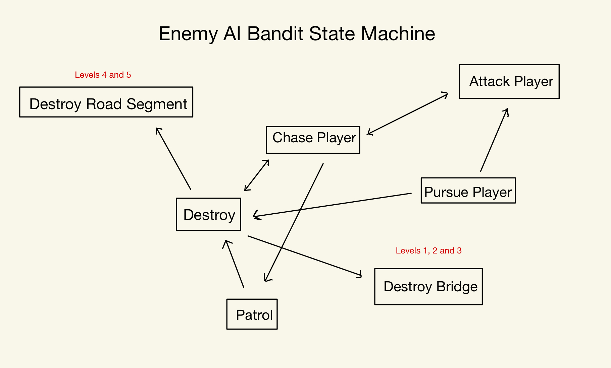
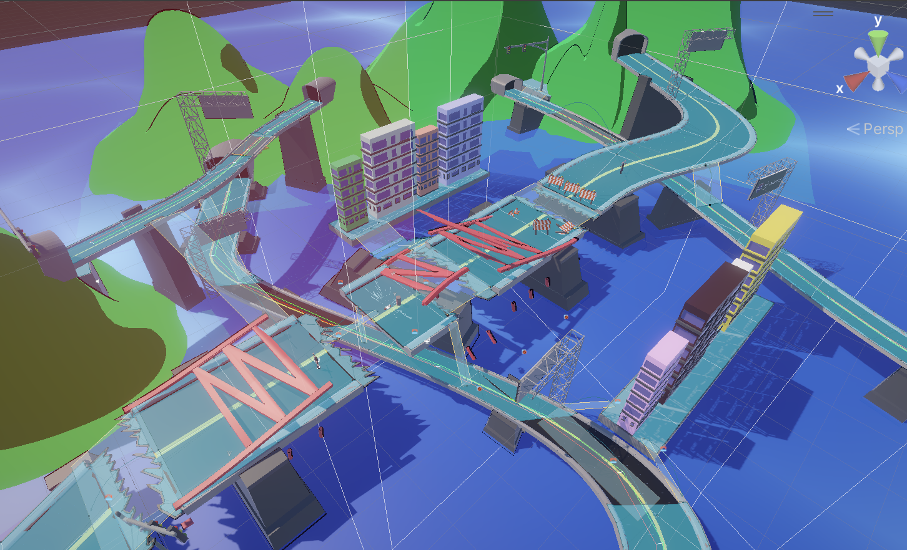
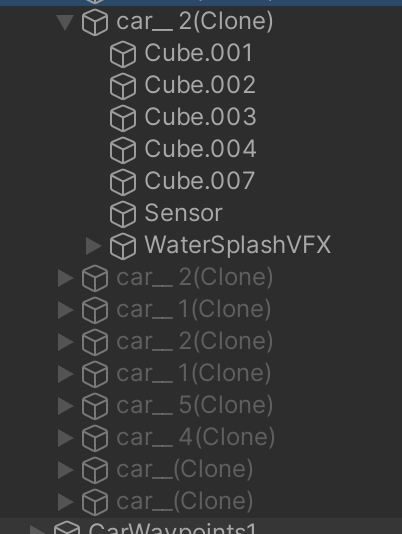
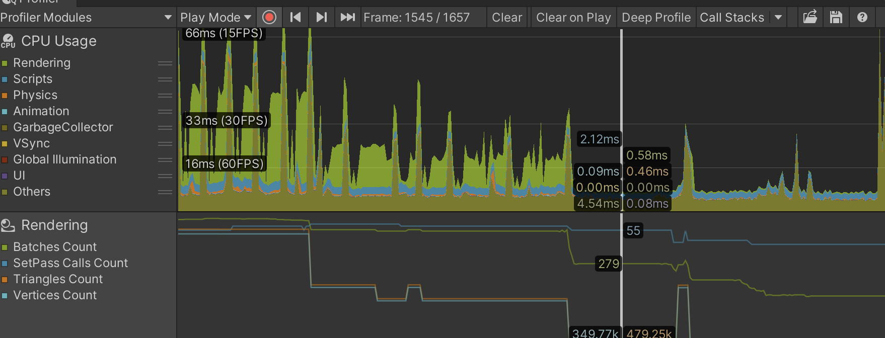
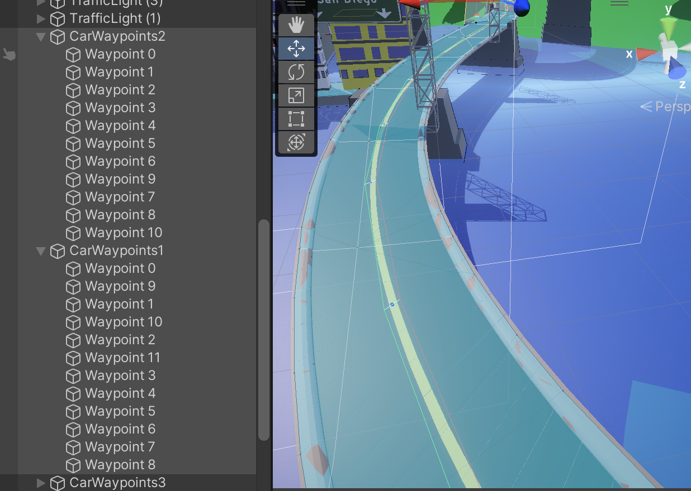

Gameplay
Bridge Breakout is a mobile action-adventure game where players use a grappling hook to travel across highways, protect bridges, and stop bandits from destroying the road network.
The game consists of five short levels built around traversal, combat, bridge protection, and increasingly difficult enemy encounters.
I developed the project in Unity and created the gameplay systems, environments, scripts, UI, VFX, and most visual assets.
Mobile Controls
Water Splash VFX
Highway Level Design

Enemy State Machine

NavMesh Layout

Object Pooling

CPU Usage from Object Pooling

Vehicle Waypoints
